The next problem, highly important in computer algebra, is a natural extension of Problem 3.1.
Problem 4.1, solution of a polynomial system of equations. Given a positive b , a positive integer D , a vector norm
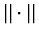
, and the coefficients of a system of n polynomial equations,
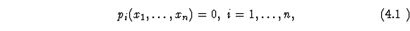
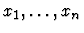
having at most D unknown common roots,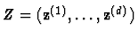
,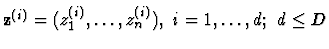
, compute approximations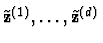
to the roots satisfying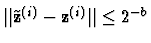
max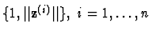
.Problem 4.1 is much harder than Problem 3.1. The known upper and lower bounds even on the sequential arithmetic computational cost of its solution remain far apart from each other; namely, they are
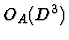
[Ren89] and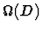
, respectively.Practically, one frequently needs a solution of various subproblems of Problem 4.1, such as the following ones.
Problem 4.2, counting the roots. Compute the number of the roots of system (4.1).
Problem 4.3, counting the real roots. Compute the number of the real roots of system (4.1).
Problem 4.4, counting the roots that lie in a fixed polytop. Compute the number of the roots of system (4.1) lying in a fixed polytop bounded by H hyperplanes in the complex n -dimensional space .
As a particular case of Problem 4.4 for H=2n , one may compute the number of nearly real roots having imaginary parts of all their n coordinates at the distance at most
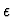
from 0, for a fixed small positive .Problem 4.5. Approximate all roots of system (4.1) that lie in a fixed polytop in bounded by H hyperplanes in .
Problem 4.6. Approximate a root of the system (4.1) maximizing the value
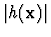
of a fixed polynomial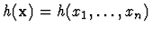
.Problem 4.7. Approximate a root of the system (4.1) minimizing the value of a fixed polynomial
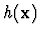
.Until recently, was the record known upper bound on the sequential arithmetic complexity of all these problems, even assuming generic system (4.1) whose solution is only sought for an algebraically open set in the input coefficient space. A substantial asymptotic acceleration, however, was achieved in our joint work with Bernard Mourrain [MP98], [MP98a], [MP,a] for Problems 4.2-4.7. We summarize this progress in the next theorem.
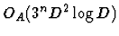
for Problems 4.2 and 4.3,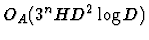
for Problem 4.4,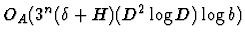
for Problem 4.5, and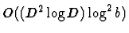
for Problems 4.6 and 4.7, assuming all these problems for generic polynomial system of equations (4.1).The algorithms of [MP98], [MP98a], [MP,a] supporting Theorem 4.1 combine several advanced algebraic and numerical techniques involving dual spaces of linear forms (maps) on the primal linear space of polynomials in , algebraic residues, structured matrices, and the iterative processes of repeated squaring and sign iteration in the primal and dual spaces. So far, involvement of such sophisticated tools slowed down the experimental testing and practical implementation of the algorithms, but their simplified versions for Problems 4.6 and 4.7 (supporting the bounds
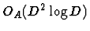
in terms of D ) have been successfully tested numerically (cf. [BMP98]).Some distinct algorithms for the fast and memory space efficient solution of sparse polynomial systems (4.1) were presented in [EP97].